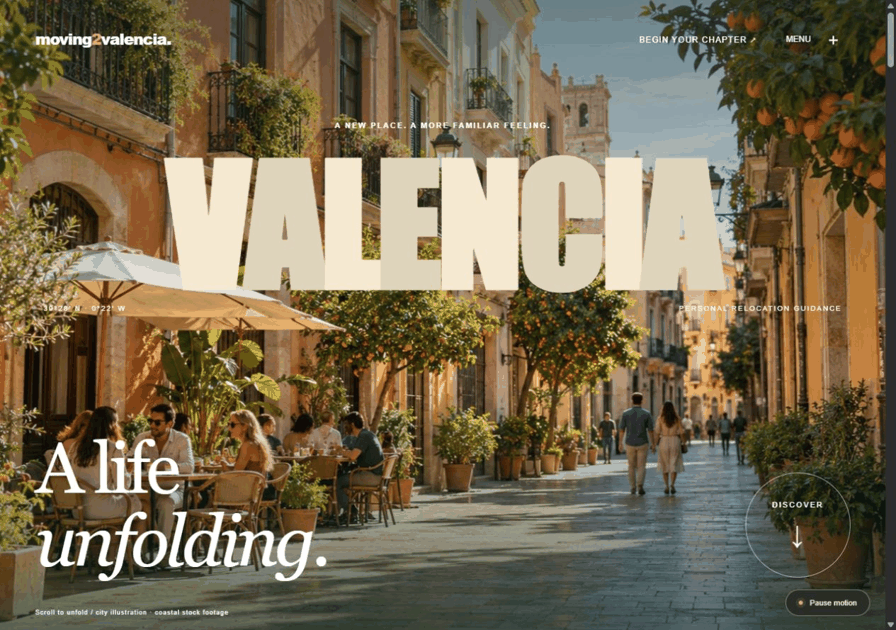
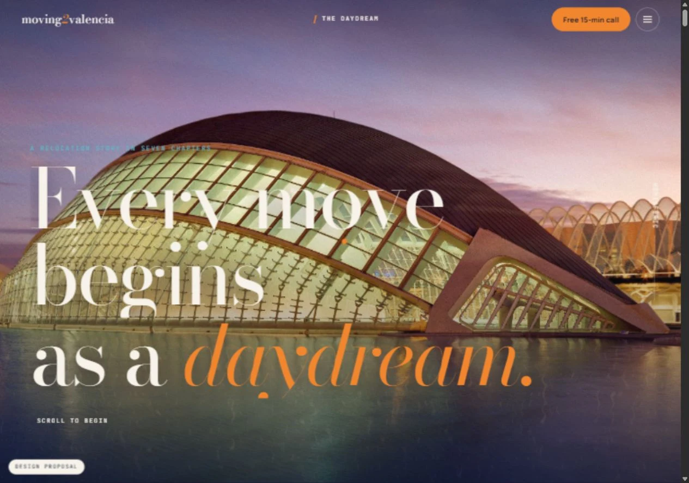
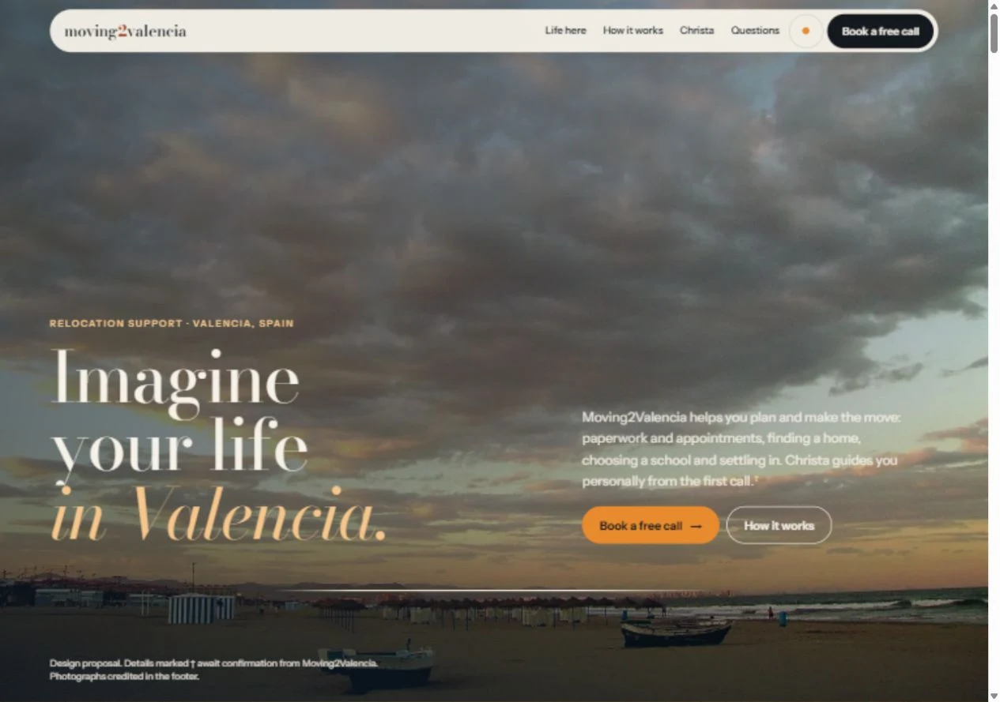
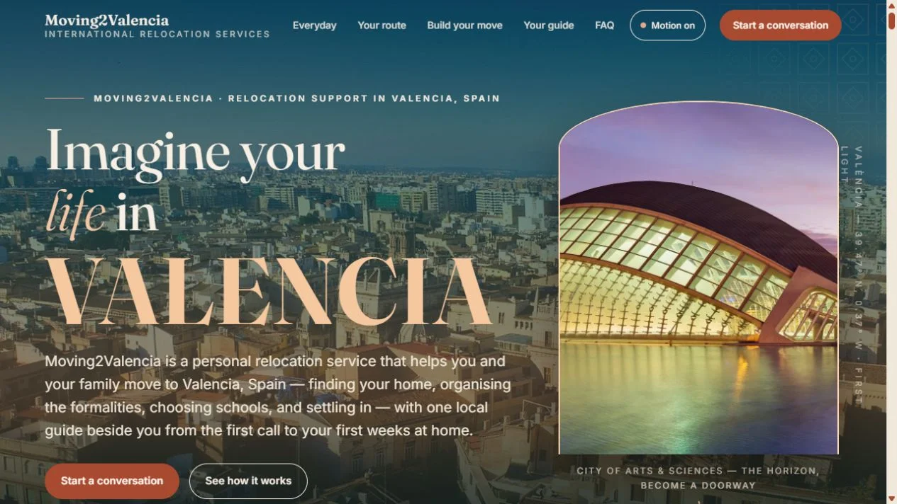

THE DEVELOPED COLLECTION / OCTOBER 2026
Eight ways
to feel at home.
One city. Eight distinct experiences.
Take your time. Find the one that feels like you.
Explore the directions ↓ VALENCIA / YOUR NEXT CHAPTER
VALENCIA / YOUR NEXT CHAPTERMore to discover.Designed for your phone.Made for your next chapter.
01 / Editorial / cinematic / considered
Editorial Journey
A place to begin. A story to belong to.
A photographic journey through everyday Valencia, with chapters to explore and a personal relocation path.
Explore the developed website ↗Download HTML ↓02 / Modular / useful / exploratory
Valencia Bento
Explore the city. Find your own rhythm.
A tactile collection of places and possibilities. Build a shortlist, discover your preferences and take your ideas into a conversation.
Explore the developed website ↗Download HTML ↓ Valencia BentoOPEN THE EXPERIENCE ↗
Valencia BentoOPEN THE EXPERIENCE ↗03 / Warm / memorable / personal
Hola, Valencia
A warm welcome, with a little flavour.
A signature cooking scene, a more compact mobile opening and a day in Valencia that you can shape around your pace.
Explore the developed website ↗Download HTML ↓ Hola, ValenciaOPEN THE EXPERIENCE ↗
Hola, ValenciaOPEN THE EXPERIENCE ↗
Valencia in MotionOPEN THE EXPERIENCE ↗ Valencia 3D AtlasEXPLORE THE ROTATING CITY ↗
Valencia 3D AtlasEXPLORE THE ROTATING CITY ↗06 / AZAHAR / ATMOSPHERE / STORY
Azahar
Every move begins as a daydream.
An indigo-to-orange-blossom journey through seven chapters. Explore city scenes, neighbourhood preferences and the practical steps of a move. This is the supplied Moving2Valencia Azahar concept.
Explore Azahar ↗Download Azahar HTML ↓
AzaharEXPLORE THE SEVEN CHAPTERS ↗
A New HorizonEXPLORE THE COASTAL JOURNEY ↗08 / VALENCIA ARRIVALS / MOTION / INTERACTION
Valencia Arrivals
From the first light to your first home.
A distinct, more interactive Horizon direction: a cinematic arrival scene, a day-in-Valencia slider, a photographic reveal, five places to explore and a move planner that carries your choices into an email preview.
Explore Valencia Arrivals ↗Download HTML with images, fonts and animation ↓
Valencia ArrivalsEXPLORE THE INTERACTIVE JOURNEY ↗INSPIRATION, WITH INTENTION
Look further.
Make it your own.
Recent award-winning hospitality and travel sites informed the sense of place, photographic pacing and playful discovery. These eight experiences have their own identity and useful interactions.
Explore the reference board ↗